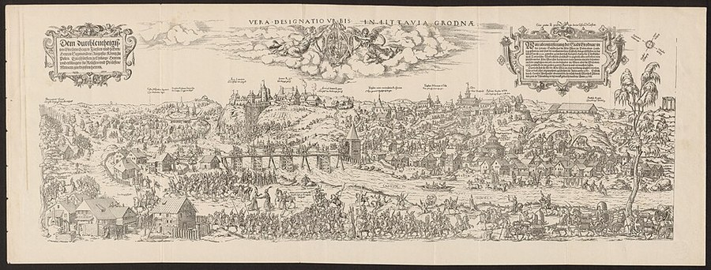

Grodno¶
In the 1380s [Historical record]¶
Grodno (Lith. Gardinas; Bel. Hrodna) is an old Ruthenian town on the high bank of the Nemunas, with the oldest surviving church of the region, the Kalozha church (before 1183). It was part of the Trakai duchy under Kęstutis; a convention here in 1358 settled the border with Masovia. VLE says Vytautas received it (with Brest and Podlasie) in 1384; en.wikipedia says he was prince of Grodno 1376-92, and that Jogaila took it in 1390 and Vytautas in 1391. Anna (Ona) was in Grodno in 1389. Vytautas later built a brick castle (dating uncertain). Jewish privileges: Brest 1 July 1388, Grodno 1389. Talks for the Union of Vilnius and Radom began here in December 1400. In 1413 it became the centre of a powiat of the Trakai voivodeship; Polish-Order border talks met here in 1425; on 15 October 1432 Bishop Oleśnicki’s delegation received Žygimantas Kęstutaitis’s oath and proclaimed him Grand Duke for life, with Jogaila absent (his own act came from Lwów on 30 Oct). Magdeburg law came in 1441. Sources: VLE; en.wikipedia (Hrodna).
Grodno

Grodno · place — Image: M. Zündt, Public domain via Wikimedia Commons¶

Tipas |
vietovė |
Pastaba |
Major fortified ducal center on the Nemunas; treaty site of 1432. |
Sensory sketch¶
A high bank over a broad river, a timber castle and wooden town with a stone church of ancient make, mixed Ruthenian, Lithuanian, Jewish and Tatar traders, Orthodox bells, flax and furs. The Nemunas runs wide and cold below; frost on the cobbles in October, snow by December. Smoke, tar and river fog; in summer meadows and storks.
Sagoje¶
Vytautas’s consolation prize and first court at home: the Nemunas here is the same river that runs past Ragnit and Georgenburg, tying his small domain to his enemy. The saga’s Gardinas is where Ona waits in 1389 while the wedding-wagon plot ripens (Book II ch. 4-5), and, in Book V ch. 10, where the agreement that makes Žygimantas Grand Duke „for life“, without a crown, is sworn.
Getting there¶
From Vilnius about 150 km straight (180-190 km by road, four to five days on horse). From Krėva about 175 km straight, 225-250 km by road (five to six days), by Lida (about 100 km from Grodno), which is why Vytautas’s escape route avoided it. From Trakai about 130 km straight. From Lyck about 100 km (three days); from Brest on the Bug about 200 km; to Marienburg about 340 km. The Biebrza marshes and Masovian frontier lie 60 km south-west.
Scenes set here¶
Book I ch. 17 Pasienis (the Gardinas forests); Book II ch. 4 Gardino kiemas (1388-89), ch. 5 Vestuvių vežimai (1389); Book V ch. 10 Gardino sutartis (15 Oct 1432), ch. 18 (recalled, 1438).
Ryšiai
Events here: Grodno: Žygimantas sworn Grand Duke before Oleśnicki (Jogaila absent)
Chronologija¶
Year |
Event |
Book |
|---|---|---|
1432-10-15 |
Grodno: Žygimantas sworn Grand Duke before Oleśnicki (Jogaila absent) |
V · Vilko Palikimas |
Sąsajos¶
graph LR
ev_grodno_1432["Grodno: Žygimantas sworn Grand Duke before Oleśnicki (Jogaila absent)"]
grodno["Grodno"]
ev_grodno_1432 -->|Location| grodno
style grodno stroke-width:3px